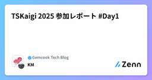
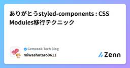

Gemcook Tech Blogのフィード
https://zenn.dev/p/gemcook
「好きな人を喜ばせるプロダクトを作る」をMissionに日々開発しています。モバイル/Webアプリの企画・UI/UX設計・開発・運用までサポート。TypeScript、React、React Native、Next.js、Go、Hono、AWS、Cloudflare、TiDB、B
フィード

TSKaigi 2025 参加レポート #Day2
Gemcook Tech Blogのフィード
2025/5/23(金)〜5/24(土)の二日間で、東京の神田で開催されたTSKaigi2025の参加レポートです。https://2025.tskaigi.org/このレポートではDay2で私が聴講したセッションの軽いまとめ＆感想と、全体の感想を書いていこうと思います！ちなみにDay1の参加レポートはこちら...！！https://zenn.dev/gemcook/articles/bf498212e5ab69TSKaigiって...？TSKaigiとは、一言で言えばTypeScriptコミュニティのお祭りです。世界一のオフラインのTypeScriptカンファレンスで、T...
1時間前

TSKaigi 2025 参加レポート #Day1 1
1
Gemcook Tech Blogのフィード
2025/5/23(金)〜5/24(土)の二日間で、東京の神田で開催されるTSKaigi 2025の参加レポートです。私が所属している株式会社Gemcookがスポンサーもしていることもあり、会社をあげてTypeScriptコミュニティを応援しています。https://2025.tskaigi.org/このレポートではDay1で私が聴講したセッションの軽いまとめ＆感想と、全体の感想を書いていこうと思います！（ざっと備忘録的に書いているのであしからず...！！）TSKaigiって...？TSKaigiとは、一言で言えばTypeScriptコミュニティのお祭りです。世界一のオフライ...
1日前

週刊Cloudflare - 2025/05/18週 1
Gemcook Tech Blogのフィード
こんにちは、あさひです 🙋♂️ 今週の Cloudflare のアップデートをまとめていきます！ この記事の主旨この記事では、前週に Cloudflare のサービスにどんな変更があったかをざっくりと理解してもらい、サービスに興味を持ってもらうことを目的としています。そのため、変更点を網羅することを優先します。 2025/05/11 ~ 2025/05/17 の変更 Wrangler 4.15.2パッチアップデートpages dev コマンドにおける R2 バケット名のバリデーションを緩和。Analytics Engine のシミュレータ実装を JSR...
2日前

ありがとうstyled-components : CSS Modules移行テクニック
1
Gemcook Tech Blogのフィード
はじめに2025年3月にstyled-componentsがメンテナンスモードになりました。https://opencollective.com/styled-components/updates/thank-you新しい技術がどんどん増えていく一方、こういった今まで利用してきたものがメンテナンスモードになっていくのは少し寂しい気持ちになります。そこで本記事では、styled-componentsからCSS Modulesに移行する方法をいくつか実際のコンポーネント例を用いて紹介していきます。 1. 基本的なスタイル styled-componentsButton...
4日前
Gemcook AI Weekly #3 - OpenAI Codex CLI入門：ターミナルで動くAIコーディングエージェントを徹底解説 1
Gemcook Tech Blogのフィード
TL;DRCodex CLI とは？ターミナルで動作する OpenAI 製の AI コーディングエージェント（オープンソース）。主な機能ローカル実行、画像入力対応、3 段階の承認モード、安全なサンドボックス実行。使い方npm installと API キー設定で開始。自然言語で指示し、コード生成・編集・実行を支援。 はじめに「Codex」という名前を聞いて、数年前に話題になった API を思い浮かべる方もいるかもしれません。しかし、2025 年に OpenAI から発表された「Codex CLI」は、それとは全く異なる新しいコマンドライ...
5日前

週刊Cloudflare - 2025/05/11週
Gemcook Tech Blogのフィード
こんにちは、あさひです 🙋♂️ 今週の Cloudflare のアップデートをまとめていきます！ この記事の主旨この記事では、前週に Cloudflare のサービスにどんな変更があったかをざっくりと理解してもらい、サービスに興味を持ってもらうことを目的としています。そのため、変更点を網羅することを優先します。 2025/05/04 ~ 2025/05/11 の変更 Wrangler 4.14.4パッチアップデートunstable_startWorker が構成エラーに対して適切に例外をスローできるよう修正。 4.14.3パッチアップデート...
9日前
Gemcook AI Weekly #2 - Gemini 2.5 / ChatGPT o3 / Claude 3.7 コスパ徹底比較3選
Gemcook Tech Blogのフィード
はじめに「もし１つだけ契約するとしたら、どの LLM を選びますか？」ChatGPT o3、Gemini 2.5 Pro、Claude 3.7 Sonnet。アップデートが出るたび料金も機能も入り乱れ、私たちエンジニアは“課金ロシアンルーレット”を強いられています。私自身、つい先日、カードの明細を見て「この 4.2 万円、本当に回収できてる？」と青ざめたひとりです。「結局どれに課金するのが一番コスパいいの？・・・」「せっかくお金を払うなら損したくないな・・・」「課金して本当に元取れるのかな？・・・」などなど、この“アップデート大戦争”の最中...
11日前
Gemcook AI Weekly #1 - Devin がGemcookに入社しました！
Gemcook Tech Blogのフィード
概要こんにちは、株式会社 Gemcook の soso です。 Gemcook AI Weekly とはGemcook AI Weekly は「AI 時代の今、AI の力を最大限に活用し、Gemcook が日本のエンジニア業界をリードしていきたい」という想いから始まりました。トレンドになっているニュースや実際にプロダクトを作っている過程で得たノウハウを週単位でアウトプットしていきます。「ワクワクさせる」「情報のタイムリー性」「明日から使える」の 3 軸を意識し、AI に関する情報をお届けします。Gemcook AI Weekly を始めるもうひとつのきっかけとして、AI ...
12日前
週刊Cloudflare - 2025/05/04週
Gemcook Tech Blogのフィード
こんにちは、あさひです 🙋♂️ 今週の Cloudflare のアップデートをまとめていきます！ この記事の主旨この記事では、前週に Cloudflare のサービスにどんな変更があったかをざっくりと理解してもらい、サービスに興味を持ってもらうことを目的としています。そのため、変更点を網羅することを優先します。 2025/04/27 ~ 2025/05/03 の変更 Wrangler 4.14.2パッチアップデートunstable_startDevWorker のエントリーポイントに関する古い JSDoc コメントを削除。実験的なユーティリティ exp...
16日前
週刊Cloudflare - 2025/04/27週
Gemcook Tech Blogのフィード
こんにちは、あさひです 🙋♂️ 今週の Cloudflare のアップデートをまとめていきます！ この記事の主旨この記事では、前週に Cloudflare のサービスにどんな変更があったかをざっくりと理解してもらい、サービスに興味を持ってもらうことを目的としています。そのため、変更点を網羅することを優先します。 2025/04/00 ~ 2025/04/26 の変更 Wrangler 4.13.2パッチアップデート依存関係を更新miniflare@4.20250424.1 4.13.1パッチアップデートwrangler workfl...
23日前
週刊 Cloudflare - 2025/04/20 週
Gemcook Tech Blogのフィード
こんにちは、あさひです 🙋♂️ 今週の Cloudflare のアップデートをまとめていきます！ この記事の主旨この記事では、前週に Cloudflare のサービスにどんな変更があったかをざっくりと理解してもらい、サービスに興味を持ってもらうことを目的としています。そのため、変更点を網羅することを優先します。 2025/04/13 ~ 2025/04/19 の変更 Wrangler 4.12.0マイナーアップデートwrangler login コマンドに --callback-host および --callback-port パラメータを追加。パッ...
1ヶ月前
週刊Cloudflare - 2025/04/13週
Gemcook Tech Blogのフィード
こんにちは、あさひです 🙋♂️ 今週の Cloudflare のアップデートをまとめていきます！ この記事の主旨この記事では、前週に Cloudflare のサービスにどんな変更があったかをざっくりと理解してもらい、サービスに興味を持ってもらうことを目的としています。そのため、変更点を網羅することを優先します。 2025/04/06 ~ 2025/04/12 の変更 Wrangler 4.10.0マイナーアップデートwrangler workflows コマンドをステーブル（正式サポート）として昇格。パッチアップデートwrangler dev ...
1ヶ月前
クリック要素が重なり合うUI実装のベストプラクティス
Gemcook Tech Blogのフィード
はじめにクリック要素が重なり合うデザインやUIはよくあると思うのですが、そのような実装のベストプラクティス(主観)を考えてみたので記事にしてみました！ 作成するもの 実装方針様々な実装方法がありますが、今回は以下のルールに沿って作成していきます。<a/> や <button/> などのインタラクティブ・コンテンツは入れ子にしない。理由：HTMLのルールだからz-indexを使用しない。理由：1つ使えば乱用が始まる危険なプロパティだからpositionを使わない。理由：スタックコンテキストを発生させるからデ...
1ヶ月前
週刊Cloudflare - 2025/04/06週
Gemcook Tech Blogのフィード
こんにちは、あさひです 🙋♂️ 今週の Cloudflare のアップデートをまとめていきます！ この記事の主旨この記事では、前週に Cloudflare のサービスにどんな変更があったかをざっくりと理解してもらい、サービスに興味を持ってもらうことを目的としています。そのため、変更点を網羅することを優先します。 2025/03/30 ~ 2025/04/05 の変更 Wrangler 4.7.2パッチアップデートR2 データカタログの URI 表記を変更し、アカウント ID とウェアハウス名の区切りをアンダースコアからスラッシュに変更。メンバーシップ情報...
1ヶ月前
フォームライブラリの新たな選択肢 - TanStack Form
Gemcook Tech Blogのフィード
はじめにみなさん、フォームライブラリは何を使っていますか？React Hook Formがフォームの一時代を築いた後に、server actionに対応しているConformが登場したり、様々なフォームライブラリがあると思いますが、今回は最近v1になったTanStack Formについてご紹介します。TanStack Formは、各入力フィールドを独立したコンポーネントとして提供します。これにより、フォーム全体を再描画するのではなく、変更が生じた特定のフィールドのみを選択的に再レンダリングすることが可能となり、パフォーマンスの最適化を実現しています。https://tanst...
2ヶ月前
週刊Cloudflare - 2025/03/30週
Gemcook Tech Blogのフィード
こんにちは、あさひです 🙋♂️ 今週の Cloudflare のアップデートをまとめていきます！ この記事の主旨この記事では、前週に Cloudflare のサービスにどんな変更があったかをざっくりと理解してもらい、サービスに興味を持ってもらうことを目的としています。そのため、変更点を網羅することを優先します。 2025/03/23 ~ 2025/03/29 の変更 Wranglerマイナーアップデートwrangler r2 bucket catalog コマンドを追加し、R2 バケットの データカタログ管理 が可能に。このコマンドは Iceberg RE...
2ヶ月前
React Nativeでローカルデータを手軽に永続的に保存する方法（Expo対応）
Gemcook Tech Blogのフィード
はじめにこんにちは！React Nativeアプリでデータをローカルに保存する方法はいくつかあります。データの種類や用途に応じて最適な選択肢を選ぶことで、アプリのパフォーマンスや使い勝手が向上します。本記事では、Expo環境で使える代表的な方法を比較し、それぞれの特徴や適したユースケースを紹介します！!上記にも記載していますがExpoを使用することを大前提に話を進めていきます。(執筆中はExpo 52です) 永続的に保存するとはどういうことか「データを永続的に保存する」とは、アプリを閉じたり、デバイスを再起動してもデータが消えないようにすることを指します。通常、Rea...
2ヶ月前
週刊Cloudflare - 2025/03/23週
Gemcook Tech Blogのフィード
こんにちは、あさひです 🙋♂️ 今週の Cloudflare のアップデートをまとめていきます！ この記事の主旨この記事では、前週に Cloudflare のサービスにどんな変更があったかをざっくりと理解してもらい、サービスに興味を持ってもらうことを目的としています。そのため、変更点を網羅することを優先します。 2025/03/16 ~ 2025/03/22 の変更 Wrangler 4.4.0マイナーアップデートWorkflows に対する削除 API エンドポイントを追加。Workflows に対してすべてのインスタンスを停止する terminate...
2ヶ月前
useOptimisticでさくっと実装する楽観的更新(Optimistic Update)
Gemcook Tech Blogのフィード
はじめにUI/UXにおける、Optimistic Updateって知っていますか？日本語にすると楽観的更新などと呼ばれたりします。実は日常にたくさん存在しており、見かけたことはあるかなと思います。例えば、Xのいいねボタンです。「いいね」した瞬間にハートに色がつくのですが、サーバーへのリクエストとUIの更新は同時に行われています。つまりサーバーへのリクエスト結果を待たずにUIを更新しているということです。これが楽観的更新になります。リクエスト結果を待ってからUIを更新する場合、ユーザーが「いいね」をしてからハートに色がつくまで時間がかかり、UXが悪くなってしまいます。そのため本...
2ヶ月前
週刊Cloudflare - 2025/03/09週
Gemcook Tech Blogのフィード
こんにちは、あさひです 🙋♂️ 今週の Cloudflare のアップデートをまとめていきます！ この記事の主旨この記事では、Cloudflare のサービスにどんな変更があったかをざっくりと理解してもらい、サービスに興味を持ってもらうことを目的としています。そのため、変更点を網羅することを優先します。 2025/03/09 ~ 2025/03/15 の変更 Wrangler 4.0.0メジャーバージョンwrangler@4.0.0をリリースされました。このバージョンでは、内部システムや依存関係の更新を行い、より一貫性のある CLI 体験を提供します。 変...
2ヶ月前